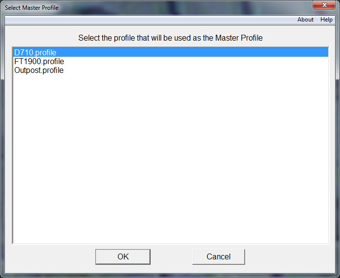

Selecting a Profile to Make into a Master Profile
|  |
| Fig. 9 -- Select one of the Outpost's Profiles from which to create a Master Profile |
Selecting the Create New Master button will bring up another dialog box with a list of profiles that exist in Outpost’s domain (see Figure 9). PreOutpost will not display any PreOutpost created profiles, just those that have been prepared by the user. Selecting the OK button and the new Master Profile will be created and PreOutpost will exit. The next time PreOutpost is started to collect identity information the new profile will be presented or used.